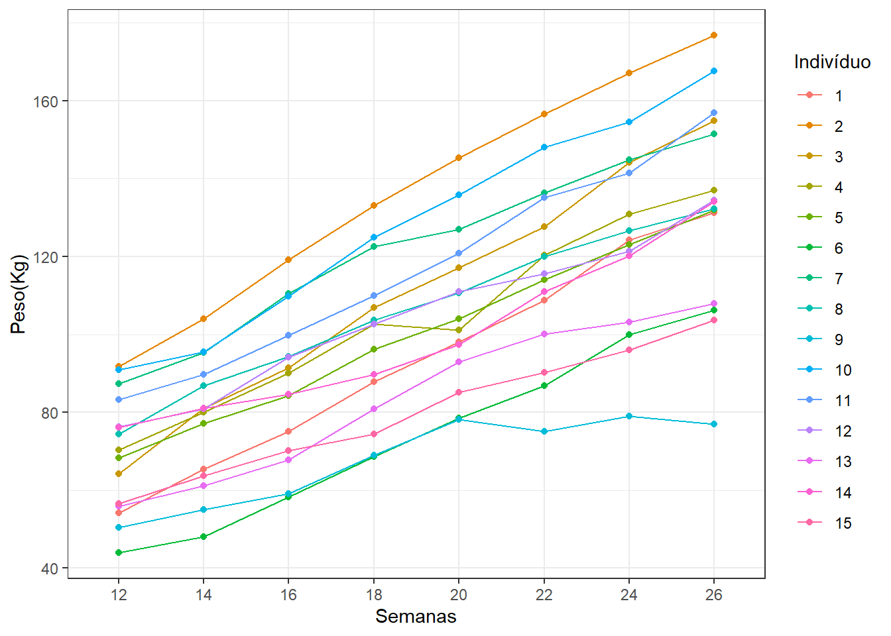
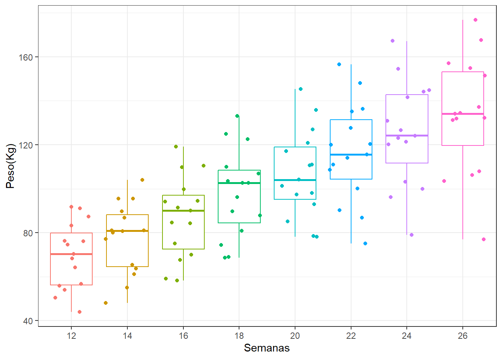
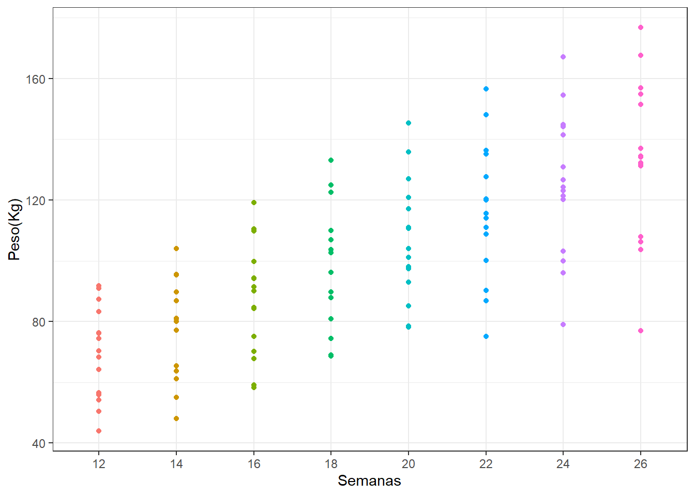
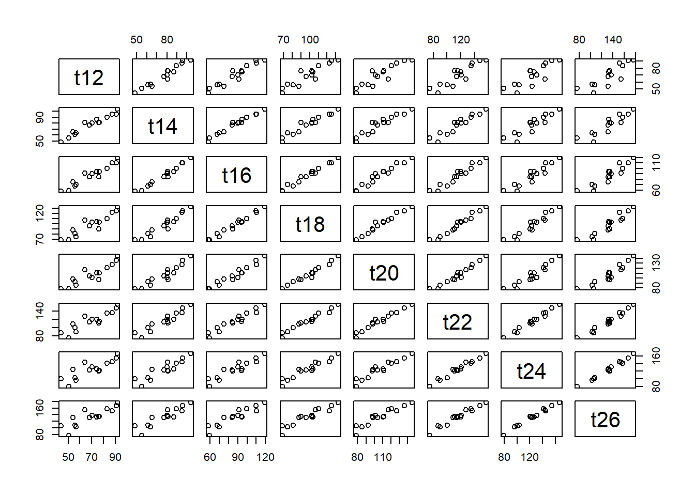

require(tidyverse)
# carregando a base de dados
dados = readxl::read_xls("../../Dados/Dados_Livro_Estatistica_e_CD/bezerros.xls")Peso de Bezerros
Objetivo do Estudo
O objetivo deste estudo é explorar o crescimento de bezerros entre a 12ª e a 26ª semana de vida, utilizando dados longitudinais com medidas repetidas. A análise inicial se concentra em compreender padrões gerais e individuais de crescimento, identificar variabilidade entre e dentro dos animais, e introduzir conceitos fundamentais de análise de dados longitudinais por meio da Análise Exploratória de Dados (AED). Exemplo do livro (Morettin e Singer 2023)
1. Compreensão da Base de Dados
- Quantos animais estão na base de dados e quantas medições cada animal possui?
glimpse(dados)Rows: 15
Columns: 9
$ ind <dbl> 1, 2, 3, 4, 5, 6, 7, 8, 9, 10, 11, 12, 13, 14, 15
$ t12 <dbl> 54.1, 91.7, 64.2, 70.3, 68.3, 43.9, 87.4, 74.5, 50.5, 91.0, 83.3, …
$ t14 <dbl> 65.4, 104.0, 81.0, 80.0, 77.2, 48.1, 95.4, 86.8, 55.0, 95.5, 89.7,…
$ t16 <dbl> 75.1, 119.2, 91.5, 90.0, 84.2, 58.3, 110.5, 94.4, 59.1, 109.8, 99.…
$ t18 <dbl> 87.9, 133.1, 106.9, 102.6, 96.2, 68.6, 122.5, 103.6, 68.9, 124.9, …
$ t20 <dbl> 98.0, 145.4, 117.1, 101.2, 104.1, 78.5, 127.0, 110.7, 78.2, 135.9,…
$ t22 <dbl> 108.7, 156.5, 127.7, 120.4, 114.0, 86.8, 136.3, 120.0, 75.1, 148.0…
$ t24 <dbl> 124.2, 167.2, 144.2, 130.9, 123.0, 99.9, 144.8, 126.7, 79.0, 154.5…
$ t26 <dbl> 131.3, 176.8, 154.9, 137.1, 132.0, 106.2, 151.5, 132.2, 77.0, 167.…- 15 animais. Cada animal possui 8 medições
- Quantas vezes o peso final (26ª semana) é maior que o peso inicial (12ª semana) para cada animal? Dica: calcular a razão
peso_final / peso_inicialpara cada animal.
(razao = dados$t26/dados$t12 ) [1] 2.426987 1.928026 2.412773 1.950213 1.932650 2.419134 1.733410 1.774497
[9] 1.524752 1.841758 1.884754 1.762779 1.932021 1.763469 1.830389summary(razao) Min. 1st Qu. Median Mean 3rd Qu. Max.
1.525 1.769 1.885 1.941 1.941 2.427 - Em média, houve um aumento de 94% nos pesos do bezerro quando comparado a primeira e a última semana
2. Visualização Geral do Crescimento
- Como o peso de cada animal varia ao longo das semanas? (Faça um gráfico de linhas por animal)
# transformando a base para o formato longer
dados.longer = pivot_longer(dados,col=-ind,names_to = "Semanas",values_to = "Peso(Kg)")
head(dados.longer,10)# A tibble: 10 × 3
ind Semanas `Peso(Kg)`
<dbl> <chr> <dbl>
1 1 t12 54.1
2 1 t14 65.4
3 1 t16 75.1
4 1 t18 87.9
5 1 t20 98
6 1 t22 109.
7 1 t24 124.
8 1 t26 131.
9 2 t12 91.7
10 2 t14 104 # Remover o "t"
dados.longer = dados.longer |> mutate(Semanas = str_extract(Semanas,"[0-9]+"))
head(dados.longer,10)# A tibble: 10 × 3
ind Semanas `Peso(Kg)`
<dbl> <chr> <dbl>
1 1 12 54.1
2 1 14 65.4
3 1 16 75.1
4 1 18 87.9
5 1 20 98
6 1 22 109.
7 1 24 124.
8 1 26 131.
9 2 12 91.7
10 2 14 104 # gráfico 1
ggplot(dados.longer,aes(x=Semanas,y=`Peso(Kg)`,group = ind,colour = factor(ind))) +
geom_line()+
geom_point() +
labs(color="Indivíduo")+
theme_bw()
# gráfico 2
ggplot(dados.longer,aes(x=Semanas,y=`Peso(Kg)`,group = ind)) +
geom_line()+
geom_point() +
labs(color="Indivíduo")+
facet_wrap(~ind) +
theme_bw()- Qual é o peso médio de bezerros em cada semana? Existe grande variabilidade entre os animais? (Boxplot)
dados.longer |>
group_by(Semanas) |>
summarise(media = mean(`Peso(Kg)`),
desvio_padrao = sd(`Peso(Kg)`),
cv = desvio_padrao/media)# A tibble: 8 × 4
Semanas media desvio_padrao cv
<chr> <dbl> <dbl> <dbl>
1 12 69.6 15.2 0.218
2 14 77.7 16.0 0.207
3 16 87.2 18.6 0.213
4 18 98.2 20.0 0.203
5 20 107. 19.9 0.187
6 22 116. 22.6 0.194
7 24 125. 23.6 0.189
8 26 134. 26.6 0.199#gráfico 1
ggplot(dados.longer,aes(x = Semanas,y=`Peso(Kg)`,colour = Semanas))+
geom_boxplot()+
ggplot2::geom_jitter()+
theme_bw() +
theme(legend.position = "none") # removendo a legenda
#gráfico 2
ggplot(dados.longer,aes(x = Semanas,y=`Peso(Kg)`,colour = Semanas))+
geom_point()+
theme_bw() +
theme(legend.position = "none") # removendo a legenda
- Quais padrões gerais de crescimento podemos observar na média ao longo das semanas?
3. Resumo Estatístico por Semana
- Qual é a média, mediana, mínimo, máximo e quartis do peso em cada semana?
- A variação do peso aumenta, diminui ou se mantém ao longo do tempo?
4. Padrões Individuais e Variabilidade
- Como diferem as trajetórias individuais de crescimento entre os animais?
dados.longer |>
group_by(ind) |>
summarise(media = mean(`Peso(Kg)`),
desvio_padrao = sd(`Peso(Kg)`),
cv = desvio_padrao/media)# A tibble: 15 × 4
ind media desvio_padrao cv
<dbl> <dbl> <dbl> <dbl>
1 1 93.1 27.6 0.297
2 2 137. 30.3 0.221
3 3 111. 31.2 0.282
4 4 104. 23.9 0.230
5 5 99.9 22.5 0.226
6 6 73.8 23.1 0.313
7 7 122. 22.9 0.187
8 8 106. 20.1 0.190
9 9 67.8 11.4 0.168
10 10 128. 28.0 0.218
11 11 117. 26.1 0.223
12 12 105. 20.1 0.192
13 13 83.7 20.3 0.242
14 14 99.3 20.6 0.207
15 15 80.0 16.4 0.2055. Tendências e Correlações
- Existe uma tendência geral de crescimento linear ou não-linear? Faça um scaterplot e calcule as correlações.
cor(dados[,-1]) t12 t14 t16 t18 t20 t22 t24
t12 1.0000000 0.9721534 0.9603725 0.9257640 0.9074319 0.9033361 0.8394016
t14 0.9721534 1.0000000 0.9870123 0.9649566 0.9441129 0.9466669 0.9071129
t16 0.9603725 0.9870123 1.0000000 0.9884339 0.9702923 0.9667980 0.9343387
t18 0.9257640 0.9649566 0.9884339 1.0000000 0.9848997 0.9820387 0.9580330
t20 0.9074319 0.9441129 0.9702923 0.9848997 1.0000000 0.9795596 0.9530074
t22 0.9033361 0.9466669 0.9667980 0.9820387 0.9795596 1.0000000 0.9863936
t24 0.8394016 0.9071129 0.9343387 0.9580330 0.9530074 0.9863936 1.0000000
t26 0.8474160 0.9020658 0.9251241 0.9386807 0.9390688 0.9789593 0.9910657
t26
t12 0.8474160
t14 0.9020658
t16 0.9251241
t18 0.9386807
t20 0.9390688
t22 0.9789593
t24 0.9910657
t26 1.0000000plot(dados[,-1])
- Como podemos começar a pensar em modelos a partir dessas observações?
6. Transformações e Medidas Relativas
- Como calcular o crescimento relativo (percentual) de cada animal ao longo do período? Considere como referência o peso incial.
dados.longer |>
group_by(ind) |>
summarise(r1 = (`Peso(Kg)`/`Peso(Kg)`[1])-1)# A tibble: 120 × 2
# Groups: ind [15]
ind r1
<dbl> <dbl>
1 1 0
2 1 0.209
3 1 0.388
4 1 0.625
5 1 0.811
6 1 1.01
7 1 1.30
8 1 1.43
9 2 0
10 2 0.134
# ℹ 110 more rows- Ao dividir o peso de cada animal pelo peso médio da semana (crescimento relativo à média), que tipo de informação podemos extrair sobre os animais?
dados.longer |>
group_by(Semanas) |>
summarise(media_semana = mean(`Peso(Kg)`),
r2 = `Peso(Kg)`/media_semana)# A tibble: 120 × 3
# Groups: Semanas [8]
Semanas media_semana r2
<chr> <dbl> <dbl>
1 12 69.6 0.777
2 12 69.6 1.32
3 12 69.6 0.922
4 12 69.6 1.01
5 12 69.6 0.981
6 12 69.6 0.631
7 12 69.6 1.26
8 12 69.6 1.07
9 12 69.6 0.726
10 12 69.6 1.31
# ℹ 110 more rowsSe \(r2 < 1\) indica que o peso do animal está abaixo da média da semana. Animais com peso_relativo muito acima ou abaixo da média por várias semanas podem indicar algum comportmento atípico. Essa razão também é uma maneira de padronizar os pesos pelo peso médio da semana, dessa forma, todos os animais são comparados na mesma escala relativa.
dados.longer |>
group_by(Semanas) |>
summarise(media_semana = mean(`Peso(Kg)`),
r2 = `Peso(Kg)`/media_semana) |>
group_by(Semanas) |>
slice(9)# A tibble: 8 × 3
# Groups: Semanas [8]
Semanas media_semana r2
<chr> <dbl> <dbl>
1 12 69.6 0.726
2 14 77.7 0.708
3 16 87.2 0.678
4 18 98.2 0.702
5 20 107. 0.732
6 22 116. 0.645
7 24 125. 0.631
8 26 134. 0.576Outras medidas
dados.longer |>
group_by(ind) |>
summarise(d = `Peso(Kg)`- `Peso(Kg)`[1])# A tibble: 120 × 2
# Groups: ind [15]
ind d
<dbl> <dbl>
1 1 0
2 1 11.3
3 1 21
4 1 33.8
5 1 43.9
6 1 54.6
7 1 70.1
8 1 77.2
9 2 0
10 2 12.3
# ℹ 110 more rowslibrary(broom)
dados.longer |>
group_by(ind) |>
do(tidy(lm(`Peso(Kg)` ~ as.numeric(Semanas), data = .)))# A tibble: 30 × 6
# Groups: ind [15]
ind term estimate std.error statistic p.value
<dbl> <chr> <dbl> <dbl> <dbl> <dbl>
1 1 (Intercept) -13.8 2.32 -5.97 9.91e- 4
2 1 as.numeric(Semanas) 5.63 0.118 47.5 5.84e- 9
3 2 (Intercept) 19.6 3.48 5.62 1.36e- 3
4 2 as.numeric(Semanas) 6.17 0.178 34.6 3.89e- 8
5 3 (Intercept) -10.0 2.87 -3.50 1.29e- 2
6 3 as.numeric(Semanas) 6.37 0.147 43.3 1.01e- 8
7 4 (Intercept) 12.2 5.57 2.20 7.04e- 2
8 4 as.numeric(Semanas) 4.83 0.285 17.0 2.70e- 6
9 5 (Intercept) 12.5 1.39 8.99 1.06e- 4
10 5 as.numeric(Semanas) 4.60 0.0714 64.4 9.42e-10
# ℹ 20 more rowsComo a regressão linear assume relação linear para toda a reta, mas temos dados entre semanas 12 e 26, o intercepto não faz sentido fora dessa faixa.
\(\beta_1\) é a inclinação, ou seja, taxa de crescimento em Kg/semana
Podemos ter intercepto com interpretação mais realista, nesse caso é preciso centralizar o tempo. Por exemplo, redefinir a semana inicial como zero:
dados.longer |>
mutate(Semana_c = as.numeric(Semanas) - 12) |>
group_by(ind) |>
do(tidy(lm(`Peso(Kg)` ~ Semana_c, data = .)))# A tibble: 30 × 6
# Groups: ind [15]
ind term estimate std.error statistic p.value
<dbl> <chr> <dbl> <dbl> <dbl> <dbl>
1 1 (Intercept) 53.7 0.991 54.2 2.66e- 9
2 1 Semana_c 5.63 0.118 47.5 5.84e- 9
3 2 (Intercept) 93.6 1.49 62.7 1.10e- 9
4 2 Semana_c 6.17 0.178 34.6 3.89e- 8
5 3 (Intercept) 66.4 1.23 54.0 2.71e- 9
6 3 Semana_c 6.37 0.147 43.3 1.01e- 8
7 4 (Intercept) 70.2 2.39 29.4 1.02e- 7
8 4 Semana_c 4.83 0.285 17.0 2.70e- 6
9 5 (Intercept) 67.7 0.597 113. 3.17e-11
10 5 Semana_c 4.60 0.0714 64.4 9.42e-10
# ℹ 20 more rows-O intercepto depende de como definimos a variável tempo.
-Ao centralizar, ganhamos uma interpretação mais útil: o peso previsto no início da observação (semana 12).
-A inclinação não muda, porque a taxa de crescimento é independente da forma como medimos o tempo.
7. Discussão e Interpretação
- Que padrões gerais e individuais de crescimento podem ser observados na turma de bezerros?
- Quais considerações iniciais podemos tirar sobre a variabilidade entre e dentro de sujeitos?
- Como essas observações podem guiar a escolha de modelos longitudinais mais avançados?
Referências
Morettin, Pedro Alberto, e Júlio da Motta Singer. 2023. Estatística e Ciência de Dados. Gen,LTC.